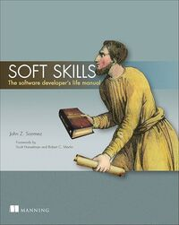

Архитектура Компьютера
Эндрю Таненбаум
1990
Фундаментальный учебник по архитектуре компьютерных систем. Подробно раскрывает принципы организации и внутреннее устройство компьютера.
Фундаментальный труд по архитектуре компьютерных систем. 6-е издание (2019) включает современные технологии.
Ключевые достоинства:
- Последовательное изложение от базовых элементов до процессоров
- Детальный разбор микроархитектуры ARM и RISC-V
- Объяснение иерархии памяти и кэширования
Обязательна к прочтению для системных программистов.
Linux Kernel Development
Роберт Лав
2003
Глубокое погружение в разработку ядра Linux. Раскрывает внутреннюю архитектуру и механизмы операционной системы.
Практическое руководство по разработке ядра Linux. 3-е издание (2010) охватывает ядро версии 2.6.34, что может не включать последние изменения в ядре.
Ключевые темы:
- Управление процессами и планировщик CFS
- Механизмы синхронизации (RCU, seqlocks)
- Управление памятью и NUMA
- Виртуальная файловая система VFS
- Драйверы устройств
Требования:
- Знание C
- Основы операционных систем
- Опыт с Linux
Отличное введение в разработку ядра Linux с фокусом на базовые концепции.
C Programming Language / Язык программирования Си
Брайан Керниган, Деннис Ритчи
1978
Первоисточник языка Си от его создателей. Классический учебник, заложивший основы современного программирования.
Библия языка C от его создателей. Второе издание (1988) описывает стандарт ANSI C (C89). Книга отличается лаконичным и точным описанием языка, с акцентом на практическом применении и чистом, идиоматическом стиле кода.
Ключевые достоинства книги:
- Четкое и краткое изложение основ языка
- Фундаментальное объяснение указателей и массивов
- Исчерпывающий обзор стандартной библиотеки
- Продуманные практические примеры
- Внимание к переносимости кода
- Объяснение идиом языка
- Примеры хорошего стиля программирования
Хотя книга не охватывает современные стандарты (C99/C11/C17), она остается лучшим введением в язык ANSI C (C89) благодаря фокусу на неизменных основах языка и четкому объяснению сложных концепций. Рекомендуется начинать изучение C именно с этой книги, дополняя знания современными источниками по новым возможностям языка.
Structure and Interpretation of Computer Programs / Структура и интерпретация компьютерных программ
Гарольд Абельсон, Джеральд Сассман
1984
Культовый учебник, который меняет взгляд на программирование. Развивает системное мышление и понимание фундаментальных принципов вычислений.
Легендарная книга, известная как SICP, которая изменила подход к преподаванию программирования в MIT.
Достоинства:
- Глубокое понимание природы вычислений
- Элегантные примеры на Scheme
- Развитие алгоритмического мышления
- Универсальные принципы построения абстракций
Книга учит через примеры на языке Scheme:
- Думать рекурсивно
- Работать с функциями высшего порядка
- Понимать разные парадигмы программирования
- Создавать чистые абстракции
Сложная, но очень награждающая книга. Рекомендуется всем, кто хочет глубоко понять природу программирования.
Clean Code / Чистый код
Роберт Мартин
2008
Фундаментальная книга о написании понятного и качественного кода. Учит принципам создания читаемого и легко поддерживаемого программного обеспечения.
Основополагающая работа по искусству написания чистого кода. Книга изменила подход многих разработчиков к написанию кода.
Ключевые моменты:
- Конкретные практические рекомендации
- Множество примеров до/после рефакторинга
- Четкие принципы именования и организации кода
- Техники декомпозиции сложных систем
Особенно полезна для:
- Начинающих разработчиков
- Тех, кто хочет улучшить качество своего кода
- Тимлидов и архитекторов, проводящих код-ревью
Единственный минус - примеры в основном на Java, но принципы универсальны для любого языка.
Code Complete / Совершенный код
Стив Макконнелл
1993
Энциклопедия практических техник программирования. Охватывает широкий спектр аспектов разработки программного обеспечения от проектирования до тестирования.
Монументальный труд по практикам разработки ПО. Настоящая энциклопедия программирования, основанная на исследованиях и реальном опыте.
Книга учит:
- Писать надежный и эффективный код
- Использовать проверенные практики
- Избегать типичных ошибок
- Применять научный подход к разработке
Актуальна несмотря на возраст - фундаментальные принципы не устаревают. Обязательна к прочтению всем разработчикам.
Designing Data-Intensive Applications
Мартин Клеппманн
2017
Исчерпывающее руководство по проектированию масштабируемых распределенных систем. Раскрывает современные подходы к обработке больших данных.
Фундаментальная работа по архитектуре современных распределенных систем.
Ключевые темы:
- Репликация и партиционирование данных
- Согласованность и консенсус в распределенных системах
- Пакетная и потоковая обработка
- Эволюция систем во времени
Особенно полезна для:
- Архитекторов распределенных систем
- Backend-разработчиков
- DevOps-инженеров
Отличное сочетание теории и практики, с акцентом на реальные системы и их компромиссы.
Мифический человеко-месяц
Фредерик Брукс
1975
Классическая книга об управлении программными проектами. Раскрывает распространенные заблуждения в разработке ПО.
Классика проектного управления в разработке ПО, актуальная и сегодня.
Ключевые идеи:
- Закон Брукса: "Добавление человеческих ресурсов к опаздывающему проекту программного обеспечения делает его ещё более опаздывающим"
- Концептуальная целостность как ключ к успеху проекта
- Хирургическая бригада как модель команды разработки
Важные выводы:
- Почему оценки времени часто неточны
- Как организовать эффективную команду
- Роль документации и коммуникации
Обязательна к прочтению для руководителей проектов и технических лидеров.
Coders at Work / Кодеры за работой
Питер Сейбел
2009
Серия интервью с выдающимися программистами мира. Раскрывает личные истории, философию и подходы к программированию легенд индустрии.
Уникальная коллекция интервью с легендами программирования.
Ключевые инсайты:
- Подходы к отладке и тестированию от экспертов
- Методы проектирования сложных систем
- Философия написания качественного кода
Интересные моменты:
- Кен Томпсон о создании Unix
- Дональд Кнут о литературном программировании
- Джо Армстронг о распределенных системах
Отличный источник вдохновения и профессиональной мудрости для разработчиков любого уровня.
Geometry of Music
Дмитрий Тимочко
2011
Инновационный взгляд на музыкальную теорию через геометрические модели. Исследует математические закономерности в музыке.
Глубокое математическое исследование музыкальной теории.
Ключевые аспекты:
- Геометрическое представление тональных пространств
- Математический анализ гармонических структур
- Новый взгляд на теорию музыки через топологию
Книга сложная, требует знания и музыкальной теории, и математики, но даёт уникальное понимание структуры музыки.
Surely You're Joking, Mr. Feynman!
Ричард Фейнман
1985
Автобиографическая книга известного физика с захватывающими историями из жизни. Рассказывает о науке, любопытстве и нестандартном мышлении.
Увлекательные мемуары нобелевского лауреата, показывающие науку с человеческой стороны.
Главные темы:
- Научное любопытство и исследовательский подход
- Важность простых объяснений сложных явлений
- Сочетание серьёзной науки и чувства юмора
Книга вдохновляет на:
- Нестандартный подход к решению проблем
- Постоянное самообразование
- Сохранение любопытства и энтузиазма
Отличное чтение для всех, кто интересуется наукой и саморазвитием.
Современные Операционные Системы
Эндрю Таненбаум
1992
Фундаментальный учебник по операционным системам. Подробно объясняет принципы работы современных ОС.
Классический учебник по операционным системам, который стал стандартом де-факто в университетах по всему миру.
Основные достоинства:
- Системный подход к изложению материала
- Сравнительный анализ разных ОС (Windows, Unix, Linux)
- Детальное рассмотрение алгоритмов и структур данных
- Актуальные примеры из реальных систем
Минусы:
- Некоторые примеры устарели
- Мало внимания современным облачным технологиям
Рекомендуется как:
- Базовый учебник для студентов
- Справочник для системных программистов
- Основа для подготовки к собеседованиям
Practical Common Lisp
Питер Сейбел
2005
Введение в мощный функциональный язык программирования. Раскрывает уникальные возможности Common Lisp.
Отличное практическое введение в Common Lisp, делающее акцент на реальных примерах.
Сильные стороны:
- Постепенное введение в концепции Lisp
- Практические примеры построения систем
- Объяснение макросов и метапрограммирования
- Демонстрация мощи REPL-driven development
Особенно полезна для:
- Программистов, интересующихся функциональным программированием
- Разработчиков, желающих расширить свой кругозор
- Энтузиастов метапрограммирования
Книга показывает уникальные возможности Lisp, недоступные в большинстве других языков.
Dive Into Python / Погружение в Python
Марк Пилигрим
2004
Практическое руководство по изучению Python для программистов. Содержит множество реальных примеров и подробных объяснений.
Практичное руководство по Python, особенно полезное для тех, кто переходит с других языков.
Сильные стороны:
- Быстрое погружение в язык через практику
- Акцент на идиоматическом Python-коде
- Подробные объяснения особенностей языка
- Реальные примеры использования
Подходит для:
- Опытных программистов, изучающих Python
- Разработчиков, желающих улучшить свой Python-код
- Тех, кто хочет быстро начать писать рабочий код
Книга остаётся актуальной благодаря фокусу на фундаментальных концепциях языка.

Fluent Python
Лучиано Рамальо
2015
Глубокое погружение в Python с раскрытием идиоматических подходов. Учит писать элегантный и эффективный код на Python.
Одна из лучших книг для перехода от базового к продвинутому уровню Python.
Сильные стороны:
- Глубокое понимание Python как языка
- Идиоматический подход к написанию кода
- Детальный разбор внутренних механизмов
- Практические примеры и паттерны
Особенно полезна для:
- Python-разработчиков среднего уровня
- Тех, кто переходит на Python с других языков
- Разработчиков, стремящихся к Python-идиомам
Отличный ресурс для углубления знаний о Python и написания более эффективного кода.
Python Cookbook / Python. Книга рецептов
Дэвид Байзер, Брайан К. Джонс
2011
Сборник рецептов и решений для Python-разработчиков. Содержит практические советы по эффективному использованию языка.
Практическое руководство по Python в формате рецептов для решения конкретных задач.
Ключевые особенности:
- Готовые решения для типичных проблем
- Подробные объяснения каждого решения
- Акцент на современных идиомах Python
- Охват широкого спектра задач
Особенно полезна для:
- Разработчиков, ищущих эффективные решения
- Программистов, желающих улучшить свой код
- Тех, кто работает над оптимизацией Python-программ
Книга служит отличным справочником для повседневных задач программирования.
Essential SQLAlchemy
Рик Коплан
2008
Полное руководство по SQLAlchemy для Python. Раскрывает все тонкости работы с базами данных через объектно-реляционное отображение.
Исчерпывающее руководство по работе с SQLAlchemy - мощным ORM для Python.
Основные темы:
- Основы работы с SQLAlchemy Core
- Детальный разбор ORM функционала
- Миграции схемы базы данных
- Оптимизация запросов
Практические аспекты:
- Моделирование отношений
- Работа с транзакциями
- Построение сложных запросов
- Обработка больших наборов данных
Подходит для:
- Python-разработчиков, работающих с БД
- Архитекторов баз данных
- Тех, кто переходит с raw SQL на ORM
Книга помогает избежать типичных ошибок и использовать SQLAlchemy максимально эффективно. Материал охватывает версии ядра Linux от 2.6 до 3.x, с акцентом на долгосрочные концепции и механизмы, которые остаются актуальными и в современных версиях.
Working Effectively with Legacy Code / Эффективная работа с унаследованным кодом
Майкл Физерс
2004
Практические техники работы со старым, сложным кодом. Учит безопасно модифицировать существующие системы.
Незаменимое руководство по работе с унаследованным кодом, который страшно менять.
Ключевые концепции:
- Определение и выявление точек изменения
- Техники безопасного рефакторинга
- Стратегии добавления тестов
- Борьба с зависимостями
Особенно полезна для:
- Разработчиков, поддерживающих legacy-системы
- Команд, работающих над рефакторингом
- Технических лидеров, планирующих обновление кодовой базы
Книга предлагает системный подход к работе со сложным кодом без риска его поломки.
Test-Driven Development: By Example / Экстремальное программирование
Кент Бек
2002
Революционный подход к разработке через тестирование. Учит создавать надежный код, начиная с написания тестов.
Фундаментальная книга по TDD от создателя методологии.
Ключевые принципы:
- Red-Green-Refactor цикл разработки
- Написание минимального кода для прохождения теста
- Постепенное улучшение дизайна через рефакторинг
- Важность маленьких шагов
Особенно полезна для:
- Разработчиков, начинающих практиковать TDD
- Команд, внедряющих автоматическое тестирование
- Тех, кто хочет улучшить качество кода
Книга учит не просто писать тесты, а использовать их как инструмент дизайна.
Refactoring: Improving the Design of Existing Code / Рефакторинг: Улучшение существующего кода
Мартин Фаулер
1999
Классический труд по улучшению структуры существующего программного кода. Систематизирует техники и подходы к рефакторингу.
Каталог техник рефакторинга, ставший классикой программной инженерии.
Основные темы:
- Принципы рефакторинга
- Признаки проблемного кода ("code smells")
- Пошаговые техники улучшения кода
- Тестирование при рефакторинге
Особенно полезна для:
- Разработчиков, работающих с legacy-кодом
- Архитекторов, улучшающих дизайн систем
- Тех, кто проводит код-ревью
Книга предоставляет общий язык для обсуждения изменений в коде и конкретные техники их реализации.
Patterns of Enterprise Application Architecture / Шаблоны корпоративных приложений
Мартин Фаулер
2002
Классический справочник по архитектурным паттернам корпоративных приложений. Систематизирует подходы к проектированию сложных информационных систем.
Фундаментальный труд по архитектурным паттернам корпоративных приложений. Книга формирует целостное архитектурное мышление через систематизацию паттернов проектирования.
Ключевые категории паттернов:
- Domain Logic (Transaction Script, Domain Model)
- Data Source (Active Record, Data Mapper)
- Object-Relational (Unit of Work, Identity Map)
- Web Presentation (MVC, Front Controller)
Особое внимание уделяется обсуждению архитектурных компромиссов и их влиянию на структуру приложения. Автор помогает принимать взвешенные решения, разбирая последствия выбора конкретных паттернов.
Mastering PostgreSQL
Ханс-Юрген Шенк
2018
Глубокое погружение в возможности PostgreSQL. Содержит практические советы по оптимизации и администрированию.
Всеобъемлющее руководство по PostgreSQL, охватывающее как базовые, так и продвинутые темы.
Эта книга представляет собой исчерпывающее руководство по PostgreSQL, охватывающее как фундаментальные концепции, так и продвинутые техники. Автор мастерски объясняет архитектуру и внутреннее устройство СУБД, уделяя особое внимание вопросам производительности, репликации и обеспечению высокой доступности.
Практические аспекты раскрыты через подробные примеры оптимизации запросов, настройки конфигурации и мониторинга производительности. Особенно ценными являются главы по управлению большими базами данных и диагностике проблем в промышленных системах.
Книга станет незаменимым ресурсом для DBA, разработчиков и DevOps-инженеров, работающих с PostgreSQL. Материал организован таким образом, что читатель постепенно погружается в тему, начиная с базовых концепций и переходя к сложным сценариям администрирования и оптимизации.
Книга предоставляет глубокое понимание PostgreSQL и практические навыки для его эффективного использования.
Законы Паркинсона
Сирил Норткоут Паркинсон
1955
Классическая сатирическая работа об организационном управлении. Исследует закономерности бюрократии и неэффективности организационных структур.
Блестящая сатира на бюрократию, актуальная и сегодня.
Ключевые законы:
- Работа заполняет время, отпущенное на неё
- Расходы стремятся сравняться с доходами
- Рост организации ведёт к усложнению структуры
- Время на принятие решения обратно пропорционально его важности
Важные наблюдения:
- Механизмы роста бюрократического аппарата
- Психология организационного поведения
- Парадоксы административной эффективности
Применимость в IT:
- Оценка проектных сроков
- Управление командами разработки
- Борьба с организационной неэффективностью
Книга помогает понять и противостоять негативным организационным тенденциям через юмор и сатиру.
Software Estimation – Demystifying the Black Art
Стив Макконнелл
2006
Практическое руководство по оценке трудоемкости программных проектов. Помогает избежать распространенных ошибок планирования.
Системный подход к решению одной из сложнейших задач в разработке ПО - оценке сроков и ресурсов. Макконнелл помогает превратить "чёрную магию" оценки в управляемый процесс, основанный на данных и опыте.
Ключевые концепции:
- Различие между оценкой и обязательством
- Конус неопределённости
- Декомпозиция для точности оценок
- Калибровка оценок на основе исторических данных
Книга детально рассматривает различные практические техники, включая оценку по аналогии, параметрическую оценку, оценку снизу вверх и управление рисками в оценках. Богатый практический опыт автора и множество реальных примеров делают её особенно ценной для проектных менеджеров, технических лидеров и разработчиков, участвующих в планировании.

Soft Skills: The Software Developer's Life Manual
Джон Сонмез
2015
Всестороннее руководство по карьере программиста. Охватывает технические и личностные аспекты профессионального роста.
Всестороннее руководство по развитию карьеры разработчика, где технические навыки гармонично сочетаются с soft skills.
Ключевые направления развития:
- Карьерный рост и личный брендинг
- Финансовая грамотность
- Продуктивность и обучение
- Физическое и ментальное здоровье
Книга рассматривает практические инструменты профессионального роста: от ведения технического блога и участия в open source до нетворкинга и управления временем. Особое внимание уделяется созданию личного бренда и финансовому планированию.
Geometry of Musical Rhythm
Годфрид Туссен
2020
Научное исследование ритмических структур в музыке. Применяет математический анализ к изучению музыкального ритма.
Уникальное исследование на стыке математики и музыкальной теории.
Основные темы:
- Геометрические модели ритмических паттернов
- Математическая теория музыкальных ритмов
- Алгоритмический анализ структур
- Компьютерное моделирование
Книга представляет глубокий анализ математической природы ритма, исследуя циклические представления и геометрические преобразования ритмических паттернов. Особенно интересен подход к анализу музыкальных структур через призму геометрии и алгоритмов.